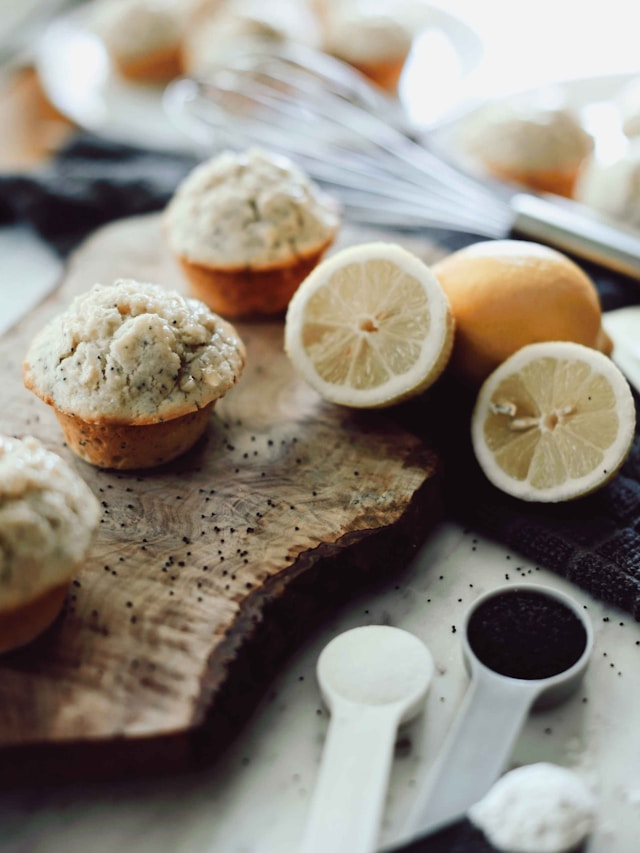

These soft, citrusy baked wonders will have you questioning
how any other muffin could ever compare! The joy you'll feel
from the lemony sweetness will have you not even minding the fact
that you accidentally failed a drug test due to those deceivingly tasty poppy seeds!
Seriously, don't eat these muffins before a drug test.